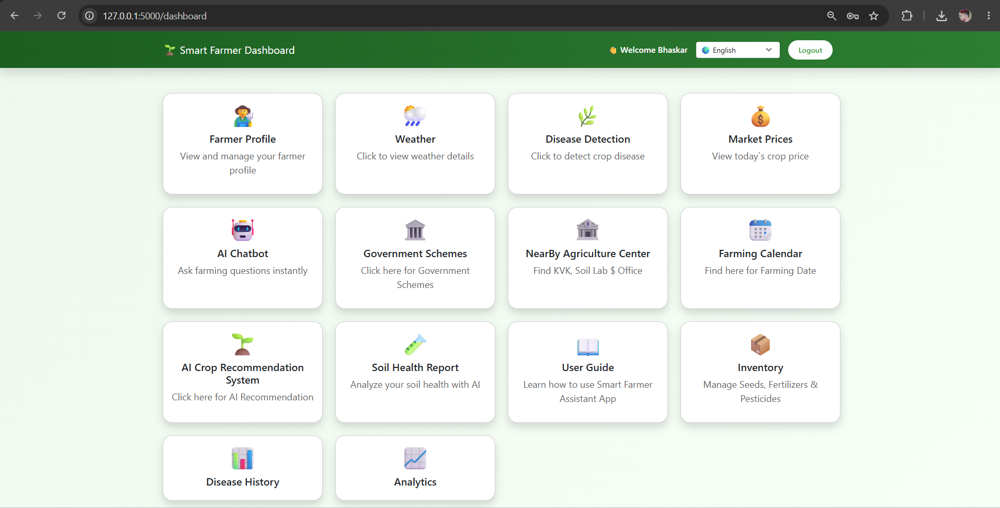

CASE STUDY · 01
SMART FARMER ASSISTANT
A practical project focused on bringing useful data-driven features and weather information together in one farmer-oriented web application.

The Idea
Smart Farmer Assistant was created to explore how software, data and useful information can be brought together to support practical farming needs.
My Role
I worked on the application structure, web interface, backend integration and database-connected features.
PROJECT FEATURES
TWELVE MODULES. ONE FARMING ASSISTANT
The Smart Farmer Assistant brings multiple useful farming features together into one connected platform.
Farmer Profiles
A dedicated profile area for farmers to manage their information and access personalized features.
Disease Detection
A disease detection module designed to help identify possible crop-related problems and provide useful information to farmers.
Market Price
Helps farmers access market price information so they can better understand current crop pricing.
Inventory
A simple inventory area for keeping track of farming-related items and available resources.
AI Chatbot
An interactive chatbot interface that gives users a convenient way to ask questions and explore farming-related information.
User Guide
A guided section that helps users understand the platform and learn how to use its different features.
Weather & Insights
Weather information and useful farming insights designed to help users make more informed decisions.
Smart Farming Calendar
A smart calendar that tells farmers the right time to sow, water and harvest, based on weather and crop data
AI Crop Recommendation
An AI tool that suggests the best crop to grow based on soil, weather and rainfall data.
Soil Health Analysis
A tool that checks soil health from nutrient, pH and moisture data, and suggests how to improve it.
Government Scheme
A tool that matches people with government schemes they are eligible for and shows how to apply
Nearby Agriculture Center
A map-based tool that helps farmers find nearby agriculture centers, shops and labs with directions.
Technologies
The project combines web development, backend programming, database connectivity and weather data integration.